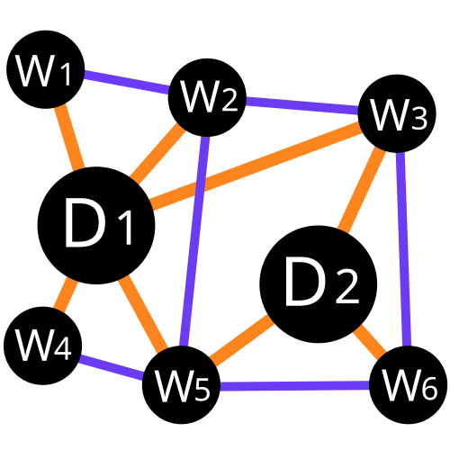

Text4GCN Documentation

Table of Contents
Why Text4GCN?
Text4GCN is an easy-to-use library for R&D at the intersection of Deep Learning on Graphs and Natural Language Processing (i.e., DLG4NLP). It provides both full implementations of state-of-the-art models for data scientists and also flexible interfaces to build customized models for researchers and developers with whole-pipeline support. Built upon highly-optimized runtime libraries including DGL , Text4GCN has both high running efficiency and great extensibility. The architecture of Text4GCN is shown in the following figure, where boxes with dashed lines represents the features under development.
This library has the following key features:
- Easy-to-use and Flexible: Provides both full implementations of state-of-the-art models and alsoflexible interfaces to build customized models with whole-pipeline support.
- Rich Set of Learning Resources: Provide a variety of learning materials including code demos, code documentations, research tutorials and videos, and paper survey.
- High Running Efficiency and Extensibility: Build upon highly-optimized runtime libraries including DGL and provide highly modularization blocks.
- Comprehensive Code Examples: Provide a comprehensive collection of NLP applications and the corresponding code examples for quick-start.
Graph4NLP consists of four different layers: 1) Data Layer, 2) Module Layer, 3) Model Layer, and 4) Application Layer, as illustrated in the following figure.